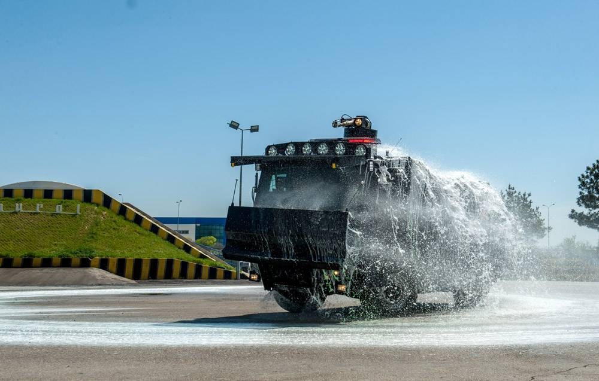
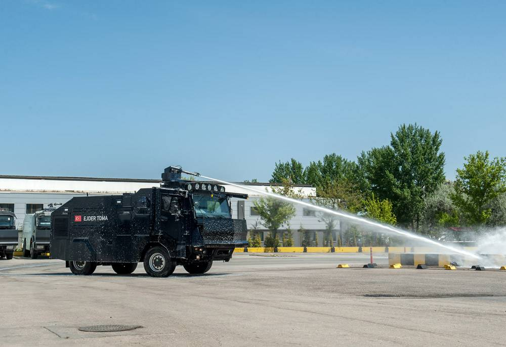
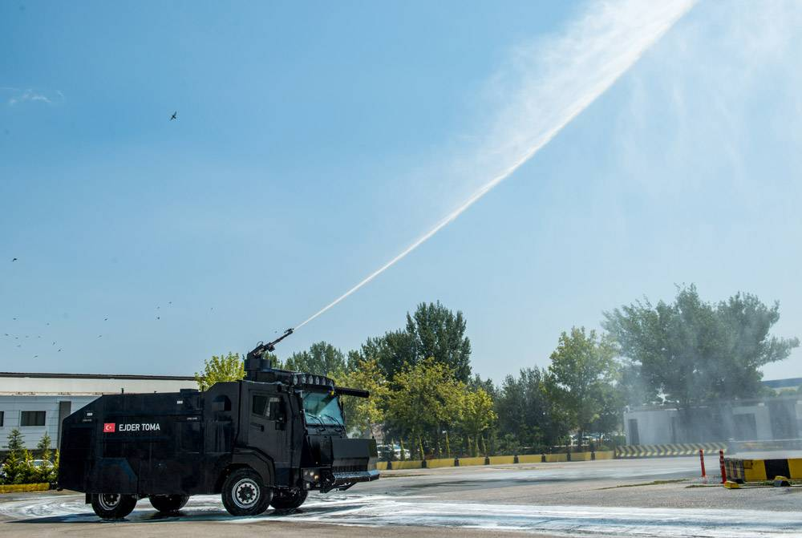

❮
❯
Nurol Makina tarafından geliştirilen 4x4 hareket kabiliyetine sahip toplumsal olaylara müdahale aracı.
EJDER TOMA 4x4, Nurol Makina tarafından güvenlik güçlerinin sivil itaatsizlik ve toplumsal olaylara hızlı ve etkili şekilde müdahale edebilmesi amacıyla geliştirilen bir riot control vehicle platformudur. Araç, 4x4 hareket kabiliyeti, yerli askerî şasi ve tam bağımsız süspansiyon sistemiyle hem şehir içinde hem kırsal alanda görev yapabilecek şekilde tasarlanmıştır.
Platform, yalnızca kalabalık kontrolü için değil; sınır bölgeleri, kırsal alanlar ve yüksek arazi performansı gerektiren görevlerde de kullanılabilecek çok amaçlı bir güvenlik aracı yaklaşımı sunar. Nurol Makina, araçtaki ekipman, elektronik, yazılım ve donanımın özgün olarak geliştirildiğini özellikle vurgulamaktadır.
Yüksek basınçlı su topu, gaz nozülleri, korumalı kabin yapısı, kamera sistemleri ve kendi kendini koruma çözümleri sayesinde EJDER TOMA 4x4, kamu düzenini sağlama görevleri için özel olarak optimize edilmiştir.



| Platform Sınıfı | 4x4 Riot Control Vehicle / Toplumsal Olaylara Müdahale Aracı |
| Üretici | Nurol Makina |
| Araç Mimarisi | Yerli askerî şasi |
| Tahrik Düzeni | 4x4 |
| Süspansiyon | Tam bağımsız süspansiyon sistemi |
| Kullanım Alanı | Toplumsal olaylara müdahale, kamu düzeni ve güvenliği, kırsal ve kentsel görevler, sınır bölgeleri |
| Arazi Yeteneği | Yüksek off-road performansı |
| Hareket Kabiliyeti | Yüksek mobilite |
| Kabin Koruması | Kendinden balistik korumalı kabin |
| Koruma Türü | Balistik koruma ve kendi kendini koruma çözümleri |
| Kabin Basınçlandırma | Pozitif basınçlı kabin |
| Cam Koruması | Tel kafes cam koruması |
| Acil Çıkış | Kabin üzerinde acil çıkış sistemi |
| Araç İçi Yangın Söndürme | Mevcut |
| Su Topu Motoru İçin Yangın Söndürme | Mevcut |
| Alev Geciktirici Boya | Mevcut |
| Gaz Nozülleri | Araç çevresine yerleştirilmiş gaz nozülleri |
| Su Topu Sistemi | Yüksek basınçlı su topu |
| Su Kullanım Profili | Kalabalık dağıtma, bariyer ve engel söndürme, görev ortamı kontrolü |
| Renkli Su Sistemi | Renkli su tankı sistemi |
| Bariyer Söndürme | Bariyer ve engelleri söndürmeye uygun görev paketi |
| Motor Tipi | Su soğutmalı, geri tepmesiz susturuculu özel motor konfigürasyonu |
| Motor Özelliği | Çevik görev temposuna ve güvenlik operasyonlarına uygun özel güç grubu |
| Kamera Sistemleri | Ön ve arka kamera |
| Görüş Kabiliyeti | Gece ve gündüz görüş sistemi |
| Sürücü Farkındalığı | 360° sürücü görüş iyileştirme sistemi |
| İletişim Sistemi | İnterkom |
| Anons Sistemi | Siren ve anons sistemi |
| Uzun Menzilli Akustik Sistem | Opsiyonel entegrasyon altyapısı |
| Yol Açma Donanımı | Yol bariyeri itici platform |
| Parça Toplayıcı Sistem | Yerdeki parça ve engeller için toplama bıçağı |
| Kabin İçi Ekipman Alanı | Koltuk altlarında ekipman kullanım alanı |
| Tasarım Yaklaşımı | Araçtaki ekipman, donanım, elektronik ve yazılım özgün olarak geliştirilmiştir |
| Konfigürasyon Esnekliği | Kullanıcı taleplerine göre düşük maliyet ve kısa sürede değişiklik uygulanabilir |
| Öne Çıkan Özellik | 4x4 yüksek hareket kabiliyeti ile riot control ekipmanlarını tek platformda birleştiren yerli özel amaçlı araç |